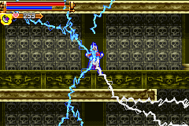
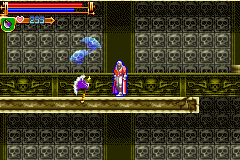
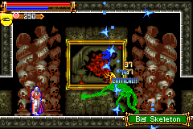
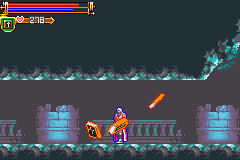

|
Sub-Weapon
Sub-Weapon หรืออาวุธเสริม นอกเหนือจาก "แส้"
Juste สามารถใช้อาวุธเสริมต่างๆ ได้เช่นเดียวกับภาคเก่าๆ
ไม่ว่าจะเป็น "มีดสั้น", "ขวาน", "ไม้กางเขน",
"น้ำมนต์"
หรือของภาคใหม่ที่มีเพิ่มขึ้นมา เช่น "หนังสือ", "หมัด"
สำหรับภาคนี้นั้น จะมีความสามารถพิเศษเพิ่มขึ้นมา
นั่นก็คือ การใช้อาวุธเสริม ควบคู่ไปกับ "เวทย์มนต์"
ซึ่ง Juste สามารถใช้เวทย์มนต์ได้ทั้งหมด 5 ชนิด คือ
Fire, Ice, Bolt, Wind, Summon
แต่เวทย์มนต์นั้น ไม่สามารถใช้เดี่ยวๆ ได้ ต้องใช้ควบคู่กับอาวุธเสริม
(ยกเว้น เวทย์ "Summon" ที่หากใช้เดี่ยวๆ จะเป็นการเพิ่ม HP จนเต็ม
: ใช้ MP 100)
ในการกดใช้ "เวทย์มนต์" อย่างรวดเร็วโดยไม่ต้องเข้าเมนู
ทำได้โดยการกด "ล่าง" ค้างไว้ แล้วตามด้วย "L" + "R"
หากต้องการเปลี่ยนเป็น "เวทย์มนต์" อื่นอย่างรวดเร็ว
กด "บน" ค้างไว้ แล้วตามด้วย "L" หรือ "R"
และหากไม่ต้องการใช้ "เวทย์มนต์" แล้ว
กด "ล่าง" ค้างไว้ แล้วตามด้วย "L" + "R"
เมื่อเปลี่ยนมาใช้ "เวทย์มนต์" พลังโจมตีจะขึ้นอยู่กับค่า Int
Note : สามารถดูรายละเอียดการเก็บ "หนังสือเวทย์มนต์"
ทั้งหมดได้จากแผนที่
(* หมายเหตุ แผนที่อ้างอิงไปที่เว็บของ Gamefaqs.com)
(หากดูแผนที่จาก Gamefaqs ไม่ได้ ให้ดูที่นี่ Map)
Axe
Use : 4 Hearts
AxeFire
Use : 70 MP
AxeIce
Use : 20 MP
AxeBolt

Use : 60 MP
AxeWind

Use : 40 MP
AxeSummon
Use : 100 MP
Dagger
Use : 1 Hearts
DaggerFire
Use : 60 MP
DaggerIce
Use : 30 MP
DaggerBolt

Use : 80 MP
DaggerWind

Use : 40 MP
DaggerSummon
Use : 100 MP
HolyBook
Use : 4 Hearts
HolyBookFire
Use : 50 MP
HolyBookIce
Use : 30 MP
HolyBookBolt
Use : 60 MP
Note : กด "บน", "ล่าง" + "โจมตี"
จะทำให้เกราะย้ายไปอยู่ด้านหลังได้
Note : เกราะรับแรงโจมตีได้ 16 ครั้ง
HolyBookWind

Use : 40 MP
HolyBookSummon
Use : 60 MP
* Note : โดยส่วนตัวแล้ว ผมชอบใช้ HolyWater ครับ
Next
to Sub-Weapon 2
|

{kind=link}